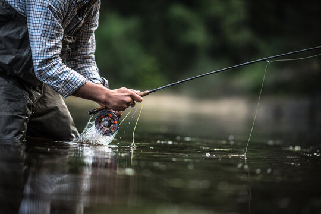

Fly-Fishing

Fly-Fishing is my favorite hobby and I fish 3-5 days a week each summer.
This page will hopefully provide some cool insights into fly-fishing!
Fly-fishing can take place in many shapes and forms
I will separate it into three main methods:
- Nymphs
- Imitates larval states of aquatic insects
- The fly/lure travels below the surface of the water
- Dry-fly
- The Classic fly-fishing technique, imitates insects on top of the surface of the water
- Very exciting as you can see the fish come out of the water to take the fly
- Streamers
- Patterns such as the Wooly Bugger
- Wet fly, imitates larger prey under the surface
Trout Fly-Fishing is my favorite
Fly-fishing can be effective for catching many kinds of fish. My favorite and the most prevalent in Utah is trout
Here's a cool video where they catch some trout fly-fishing
Here's a cool Tableau chart I found that showcases some interesting fly-fishing data